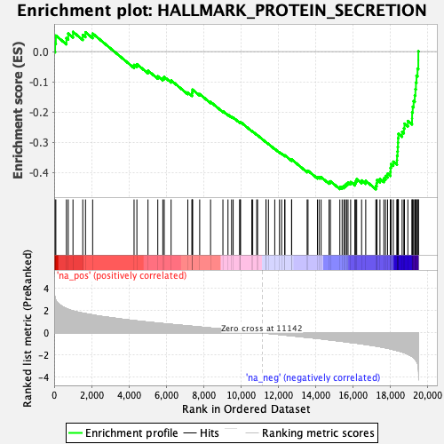
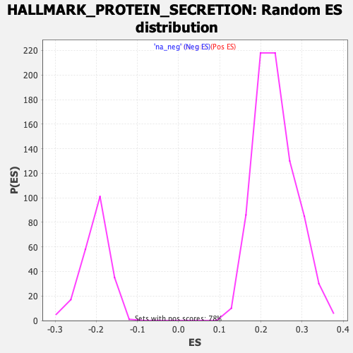

| | | Dataset | CK_basal |
| Phenotype | NoPhenotypeAvailable |
| Upregulated in class | na_neg |
| GeneSet | HALLMARK_PROTEIN_SECRETION |
| Enrichment Score (ES) | -0.45578617 |
| Normalized Enrichment Score (NES) | -2.261858 |
| Nominal p-value | 0.0 |
| FDR q-value | 0.0 |
| FWER p-Value | 0.0 |
Table: GSEA Results Summary

Fig 1: Enrichment plot: HALLMARK_PROTEIN_SECRETION
Profile of the Running ES Score & Positions of GeneSet Members on the Rank Ordered List
| SYMBOL | RANK IN GENE LIST | RANK METRIC SCORE | RUNNING ES | CORE ENRICHMENT | | 1 | VAMP4 | 51 | 3.153 | 0.0273 | No |
| 2 | AP1G1 | 90 | 2.921 | 0.0530 | No |
| 3 | ANP32E | 656 | 2.185 | 0.0446 | No |
| 4 | BNIP3 | 753 | 2.112 | 0.0597 | No |
| 5 | ERGIC3 | 1008 | 1.967 | 0.0653 | No |
| 6 | KRT18 | 1532 | 1.772 | 0.0552 | No |
| 7 | GLA | 1678 | 1.726 | 0.0641 | No |
| 8 | RAB9A | 2061 | 1.610 | 0.0597 | No |
| 9 | GOSR2 | 4279 | 1.099 | -0.0440 | No |
| 10 | COPE | 4431 | 1.070 | -0.0416 | No |
| 11 | ATP6V1H | 5025 | 0.965 | -0.0630 | No |
| 12 | RAB22A | 5550 | 0.873 | -0.0817 | No |
| 13 | M6PR | 5819 | 0.832 | -0.0876 | No |
| 14 | ATP6V1B1 | 5896 | 0.821 | -0.0837 | No |
| 15 | ATP7A | 6263 | 0.764 | -0.0953 | No |
| 16 | CLN5 | 7158 | 0.626 | -0.1354 | No |
| 17 | STX7 | 7384 | 0.590 | -0.1414 | No |
| 18 | EGFR | 7385 | 0.589 | -0.1358 | No |
| 19 | ICA1 | 7409 | 0.585 | -0.1314 | No |
| 20 | STAM | 7411 | 0.584 | -0.1260 | No |
| 21 | ARFGEF1 | 7795 | 0.524 | -0.1407 | No |
| 22 | SH3GL2 | 8377 | 0.433 | -0.1665 | No |
| 23 | TOM1L1 | 9039 | 0.330 | -0.1974 | No |
| 24 | YKT6 | 9310 | 0.286 | -0.2086 | No |
| 25 | KIF1B | 9502 | 0.255 | -0.2160 | No |
| 26 | AP2M1 | 9588 | 0.243 | -0.2181 | No |
| 27 | VPS4B | 9940 | 0.192 | -0.2343 | No |
| 28 | VAMP7 | 9950 | 0.190 | -0.2330 | No |
| 29 | BET1 | 9985 | 0.184 | -0.2330 | No |
| 30 | CAV2 | 10587 | 0.091 | -0.2630 | No |
| 31 | STX16 | 10636 | 0.082 | -0.2647 | No |
| 32 | CLTA | 10850 | 0.046 | -0.2753 | No |
| 33 | CLCN3 | 10895 | 0.039 | -0.2771 | No |
| 34 | DST | 11345 | -0.031 | -0.3000 | No |
| 35 | GALC | 11347 | -0.032 | -0.2997 | No |
| 36 | ARFIP1 | 11477 | -0.051 | -0.3059 | No |
| 37 | IGF2R | 11815 | -0.104 | -0.3222 | No |
| 38 | TSPAN8 | 12069 | -0.147 | -0.3338 | No |
| 39 | ZW10 | 12183 | -0.164 | -0.3381 | No |
| 40 | TMED10 | 12346 | -0.193 | -0.3446 | No |
| 41 | VPS45 | 12362 | -0.197 | -0.3435 | No |
| 42 | STX12 | 12717 | -0.259 | -0.3593 | No |
| 43 | SGMS1 | 12722 | -0.260 | -0.3570 | No |
| 44 | RPS6KA3 | 13550 | -0.401 | -0.3958 | No |
| 45 | ADAM10 | 13597 | -0.409 | -0.3943 | No |
| 46 | AP3S1 | 14102 | -0.496 | -0.4155 | No |
| 47 | TMED2 | 14190 | -0.511 | -0.4151 | No |
| 48 | SNAP23 | 14298 | -0.533 | -0.4156 | No |
| 49 | NAPG | 14724 | -0.621 | -0.4316 | No |
| 50 | SEC31A | 14797 | -0.635 | -0.4293 | No |
| 51 | ARF1 | 15302 | -0.737 | -0.4482 | Yes |
| 52 | MAPK1 | 15424 | -0.759 | -0.4473 | Yes |
| 53 | AP2S1 | 15521 | -0.781 | -0.4448 | Yes |
| 54 | TMX1 | 15592 | -0.797 | -0.4408 | Yes |
| 55 | DNM1L | 15666 | -0.811 | -0.4369 | Yes |
| 56 | CLTC | 15741 | -0.829 | -0.4329 | Yes |
| 57 | CTSC | 15880 | -0.863 | -0.4318 | Yes |
| 58 | COPB1 | 16105 | -0.906 | -0.4347 | Yes |
| 59 | RAB14 | 16156 | -0.916 | -0.4286 | Yes |
| 60 | RAB2A | 16204 | -0.925 | -0.4223 | Yes |
| 61 | ABCA1 | 16467 | -0.983 | -0.4264 | Yes |
| 62 | SEC24D | 16689 | -1.039 | -0.4279 | Yes |
| 63 | SSPN | 17231 | -1.179 | -0.4446 | Yes |
| 64 | TSG101 | 17272 | -1.190 | -0.4354 | Yes |
| 65 | SCAMP1 | 17291 | -1.196 | -0.4250 | Yes |
| 66 | LMAN1 | 17450 | -1.245 | -0.4213 | Yes |
| 67 | SCRN1 | 17659 | -1.313 | -0.4196 | Yes |
| 68 | AP2B1 | 17751 | -1.339 | -0.4116 | Yes |
| 69 | GBF1 | 17859 | -1.377 | -0.4040 | Yes |
| 70 | SCAMP3 | 18011 | -1.434 | -0.3982 | Yes |
| 71 | RAB5A | 18018 | -1.438 | -0.3849 | Yes |
| 72 | OCRL | 18039 | -1.445 | -0.3722 | Yes |
| 73 | MON2 | 18164 | -1.499 | -0.3644 | Yes |
| 74 | USO1 | 18362 | -1.586 | -0.3595 | Yes |
| 75 | TPD52 | 18367 | -1.588 | -0.3446 | Yes |
| 76 | ATP1A1 | 18391 | -1.597 | -0.3307 | Yes |
| 77 | RER1 | 18404 | -1.601 | -0.3161 | Yes |
| 78 | SEC22B | 18415 | -1.603 | -0.3014 | Yes |
| 79 | YIPF6 | 18422 | -1.605 | -0.2865 | Yes |
| 80 | AP3B1 | 18439 | -1.613 | -0.2720 | Yes |
| 81 | CD63 | 18637 | -1.720 | -0.2659 | Yes |
| 82 | SOD1 | 18731 | -1.774 | -0.2538 | Yes |
| 83 | PAM | 18764 | -1.789 | -0.2385 | Yes |
| 84 | PPT1 | 18945 | -1.909 | -0.2297 | Yes |
| 85 | COG2 | 19169 | -2.114 | -0.2211 | Yes |
| 86 | GOLGA4 | 19173 | -2.117 | -0.2012 | Yes |
| 87 | ARFGEF2 | 19205 | -2.148 | -0.1824 | Yes |
| 88 | VAMP3 | 19254 | -2.218 | -0.1639 | Yes |
| 89 | COPB2 | 19315 | -2.309 | -0.1451 | Yes |
| 90 | ARFGAP3 | 19349 | -2.396 | -0.1241 | Yes |
| 91 | LAMP2 | 19377 | -2.465 | -0.1021 | Yes |
| 92 | NAPA | 19406 | -2.538 | -0.0795 | Yes |
| 93 | GNAS | 19462 | -2.737 | -0.0564 | Yes |
| 94 | SNX2 | 19505 | -3.125 | -0.0289 | Yes |
| 95 | ARCN1 | 19506 | -3.146 | 0.0009 | Yes |
Table: GSEA details [plain text format]

Fig 2: HALLMARK_PROTEIN_SECRETION: Random ES distribution
Gene set null distribution of ES for HALLMARK_PROTEIN_SECRETION